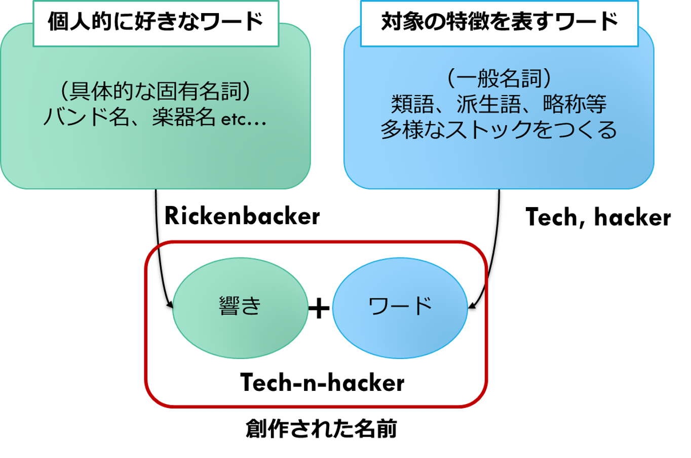

ブログのネーミング

概要: サービスのネーミング方法をよく調べ考えた上で、このブログのネーミングをする。加えて、自分に合ったネーミング方法を確立する。
なぜやるか
私はネーミングが下手である。
これまでPC、アカウント名、自作サービスからポケモンまで様々なものをネーミングしてきた。
だがそういった際、さんざん迷って時間をかけた挙句、後で後悔して修正し、また後で後悔する、といったことが多い。
そしてまたこのブログのネーミングができずにいる。
いい加減、自分なりのネーミング方法を確立したい。
そこで、ネーミング方法についてよく調べ、このブログのネーミングをしていく中で、自分に合ったネーミング方法を確立していく。
ネーミングの方法
ネーミング方法を調べる中で個人的にピンときたものをピックアップ
気を付けるポイント
- 言いやすさ・覚えやすさ
- コンテンツとの合致
- かぶらない、強い競合がいない
- 海外から見て変じゃないか
メソッド
- 関連する単語を組み合わせる
- 一部の文字を変える
- 提供価値からつける
- 日本語をそのままつける
SEOとか
- 今回は気にしない
キーワードの抽出
なお、今回は英語の名前をつける
web service関連
network, net, on-line, www, world-wide-web
engineer関連
technologist, tech, hack, scientist, science, mechanic, mechanism, mecha, creater, skill
ブログ関連
log, lab, collection, note, memo
名前をつくってみる
組み合わせ等を駆使してアイデア出し。
tech-log, tech-no-log, hacknology, tec-hac-log, hack-no-log, enginic, enginism, webnic, webism, servicism, hackanic, hackanism, mechanolog, tech-hack, techac, gishi-log, gishi-lab, hackno-labo, tech-hack-collection, hacked-wide-memo, teclog,
たくさん創出したが、調べてみると既存の何かと大抵かぶっている。
メジャーな語を二語組み合わせたくらいだとだめらしい。
差別化する
３語組み合わせるか、オリジナルなワードを入れるかする必要がある
-
３語
tec-hac-log, tec-hac-net, tec-hac-colec, web-tec-hac -
オリジナルワードとの組み合わせ
- オリジナルなワード…(自分が好きなもの)
tomato, doraemon, telecaster, Rickenbacker, quruli- 組み合わせによる創作
tec-caster, hac-caster, Ricken-hacker, Tech-n-hacker, Tech-on-hacker, Tech-en-hacker, tsukuri
Rickenbacker（リッケンバッカー）の語呂で、Tech-n-hacker（テッケンハッカー）が気に入った。
読みやすくするなら、Tech-and-hackerとかTech-on-hackerだが、しょせん個人ブログの名前なので字面のカッコよさを優先することにした。
自分に合ったネーミング方法
自分に合ったネーミング方法を一般化するとこんな感じ。
- 自分が個人的に好きな固有名詞の響きや語呂と、
- 対象（サービス）の特徴を表すワードとを、
- 組み合わせて新たな名前を創作する
図にするとこう。

この方法のメリットを列挙
- 好きなワードから響きをとっているので自分が気に入りやすい
- サービスの特徴からワードをとっているので、意味もサービスの内容と合う。
- 固有名詞から響きをとってきているので他とかぶりにくい。
まとめ
- 好きなワード（自分の場合は楽器名やバンド名）の響きを基盤にして、サービスの特徴を表すキーワードを取り込むことでネーミングしたら、自分的に納得いくものができた。
- 好きなワードをベースにすることで、響きもよいし、差別化できる気がする
- 差別化方法としては、字面をいじる、日本語をそのまま使うというテクニックも使えると感じた
- 別の場面でもこの方法を使ってみよう